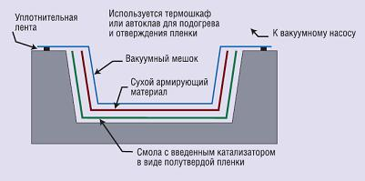

<section class="manufacture page__global">
  <div class="manufacture__inner">

    <h1 class="manufacture__title page__title">Вакуумная инфузия
    </h1>
    <ul class="breadcrumb">
      <li class="breadcrumb__item">
        <a class="breadcrumb__link" href="index.html">Главная</a>
      </li>
      <li class="breadcrumb__item">
        <a class="breadcrumb__link" href="manufacture.html">Производство</a>
      </li>
      <li class="breadcrumb__item">
        <a class="breadcrumb__link" href="manufacture-part2.html">Закрытые методы формования</a>
      </li>
      <li class="breadcrumb__item">Вакуумная инфузия
      </li>
    </ul>

    <div class="wrapper">

      <p class="page__text">
        Сухие ткани выкладываются вместе со слоями полутвердой пленки из смолы. Весь полученный пакет закрывается
        специальной пленкой. Сначала между пленкой и формой создается вакуум, после чего форму помещают в термошкаф или
        автоклав. Под воздействием температуры смола переходит в текучее состояние и благодаря вакууму пропитывает
        материал. После некоторого времени смола полимеризуется.
      </p>
      

      <p class="page__subtitle page__text">
        Применяемые материалы
      </p>
      <p class="page__text">
        <span>Смолы: Только эпоксидная смола.</span>
        <span>Волокна: Любые.</span>
        <span>Наполнители: Почти все, хотя ПВХ пена нуждается в специальной обработке из-за высоких температур процесса.</span>
      </p>
      <p class="page__subtitle page__text">
        Основные преимущества
      </p>
      <p class="page__text">
        Могут быть получены ламинаты с высоким содержанием стекла и с минимальным содержанием пустот.
        Высокие физико-механические характеристики из-за твердого начального состояния полимера и высоких температур
        отверждения.
        Более низкая стоимость процесса по сравнению с методом препрегов.
        Хорошие условия труда и окружающей среды. Нет большого выброса вредных веществ.
      </p>
      <p class="page__subtitle page__text">
        Основные недостатки
      </p>
      <p class="page__text">
        <span>Мало применяется вне аэрокосмической промышленности.</span>
        <span>Для процесса необходима система вакуумного мешка, термошкаф или автоклав.</span>
        <span>Требования к оборудованию и инструменту по температуростойкости.</span>
      </p>

    </div>


  </div>
</section>